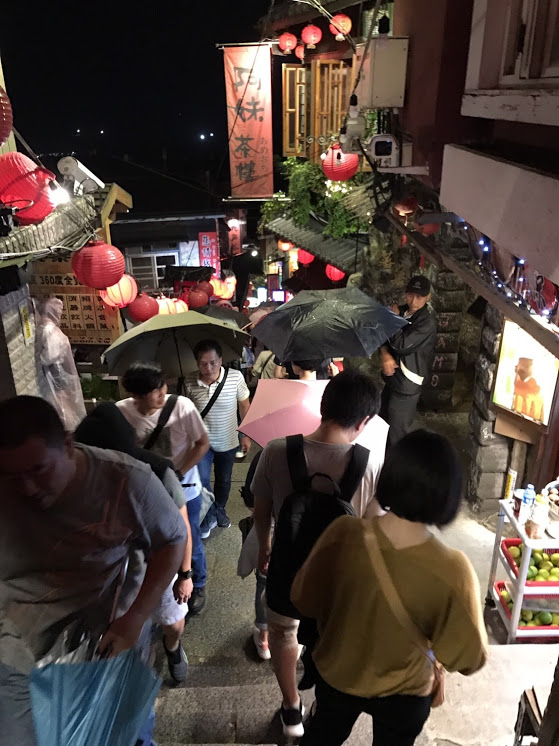
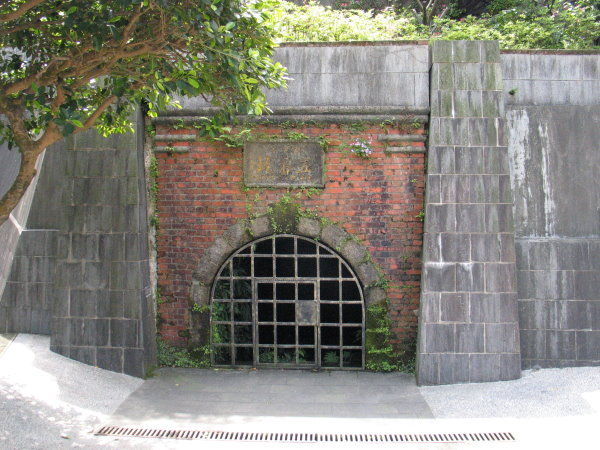

文青之旅
九份老街
有人說，九份走紅都是因為電影《悲情城市》，但那可能是沒有細細體驗九份的美好才會這樣認為。
九份不僅保留著日據時代的舊式建築，更重要的是山城的氛圍。雖然今日的老街總是人聲鼎沸 ，但只有在九份，才能享受到特有的小徑通幽賞景之樂。
到這裡，不能免的似乎一定要吃碗芋圓，其實這裡的懷舊小吃還有很多選擇，在基山街、豎崎
路及輕便路三條街道形成一個真實版故事屋，
在這裡可以一探九份精彩的故事，可以邊逛邊吃，邊吃邊走。
時間多的話，就到黃金博物館去走走，更可以窺見昔日淘金盛況的些許風貌。

翁山英故居
翁山英故居現作為九份茶坊用，大致上仍然維持原有的空間佈局，建造物本身為石造混合木
結構，外觀上看來樸實，
從前後兩面看來，又不盡相
同，前為一樓，後為二樓，室內空間大致上保持原有面貌，空間變化豐富，保留有傳統建築
的空間格局，顯見原始設計思想重點所在。
現有修部分，對於空間運用頗多巧思，保留原有特色外，也增加建築本身所展現的彈性，使得本宅 雖然已有九十幾年的歷史，仍然展現出其獨有風情。
九份昇平戲院
「昇平戲院」前身起源於大正5年，為舊時市場旁的木造戲台，主演歌仔戲，約可容納約三四百人。
昭和2年(1927年)戲台因年久而崩垮，而後經營者於原地建造戲院，佔地約200坪， 為日治時代全台灣最大的戲院。
後因九份人口外流嚴重而於1986年結束營業。特殊的建築使得許多電影皆以昇平戲院為場景， 包含「多桑」﹑「悲情城市」﹑或「藍山咖啡」等，拍出經典鏡頭。
不但為北台灣最古老的戲院，也是遊客造訪九份的必遊景點之一。
九份金礦博物館
由在地老礦工經營的鄉土展示館，展示九份的淘金歷史、煉金器具，及數十種金礦原石，全是 礦工出身的館主歷經三代之珍藏。
五番坑
九份五番坑鑿於民國十六年，原本為日本人所經營管理，台灣光復後交由九大公司承包，於民 國六十年全面停止開採，並因安全問題封閉坑道。
坑道口前有一座小廣場相當適合團康活動使用，目前整建為五番坑小公園，並設有多項休憩設 施，是欣賞九份海景的最佳位置。

崙頂福山宮
座落在瑞芳區山區，祭祀土地公，坐北朝南面海，廟中有廟之三開間格局，為九份地理位置最 高的廟宇，因九份地區的金礦事業而隨之發達鼎盛。
福山宮原本僅是一座兩公尺四方的小廟，在日治時代金礦工人常到廟中許願，祈求能順利挖到
金礦，而土地公也庇佑許多礦工達成心願，
挖到金礦的礦工紛紛來廟裡還願，想幫靈驗的土地公起
大厝，換間華麗的房子，
誰料擲筊多次，都不願意拆舊屋換新厝。為表示誠意，信徒於是在外頭
加蓋一間三開間的華廟（依照土地神神格，一般都只做一開間），而形成廟中廟的奇特景觀。
黃金神社
"金瓜石黃金神社"又名金瓜石社、山神社，位於臺灣新北市瑞芳區金瓜石，臨近九份，
為日治時期的興建之神社。
明治30年（1897年）田中組投入開發金瓜石礦山。為了安定民心，於本山大金瓜岩嶂東側平地間初建神社。
後於1933年（昭和8年），日本礦業株式會社接管金瓜石礦山後，將神社移至現址並擴建，主奉 治鍊之神，主祀日本礦業的守護神-大國主命、金山彥命、猿田彥命，為當時候的信仰中心。
台灣光復後，神社遭廢除並破壞棄置，現僅存有鳥居兩座、石燈籠四對、旗幟台一對及正 殿石柱。後經認定後，被劃分於黃金博物園區園區範圍內的古蹟建築。
無耳茶壺山
無耳茶壺山的登山步道
無耳茶壺山的登山步道從金瓜石金光路開始，勸濟堂後方礦道往上爬，約有300公尺是石階步
道，經過寶獅亭即可到達無耳茶壺山之山頂，
瞭望整個海岸線，可東眺太平洋，南望半屏山，草
山青翠連綿的山脈，還可以欣賞對面的基隆山(大肚美人山)
以及金水公路的迴頭彎、濱海公路的陰陽
海，路途約為2個小時，沿途視野寬廣，返程由半平山經燦光寮山續接草山公路。
黃金瀑布
位於金瓜石往水湳洞的公路邊，早期曾經叱吒一時現已廢棄的台金公司，在金瓜石及九份產礦
由於山泉水與雨水滲入，礦砂沉積溪床，
並有菌類附著滋生，水質飽含氧化的金屬礦石顏色，而形
成金黃色的瀑布景觀，當地居民故稱為『黃金瀑布』。
金字碑古道
三貂嶺古道(金字碑古道)位於新北市瑞芳區，是淡蘭古道今日的支線之一(包括草嶺古道、隆嶺古道)，
從淡水、基隆、瑞芳、三貂嶺，最後經過雙溪和草嶺而進入宜蘭，在昔日採煤業發達的時代
相當興盛，屬於大基隆煤礦的產地，
是侯硐、三貂嶺、平溪和十分寮等地居民重要的出入道路，但隨
著煤礦枯竭而漸漸落寞，近年來旅遊風氣盛行又再度成為民眾熱門的旅遊景點。